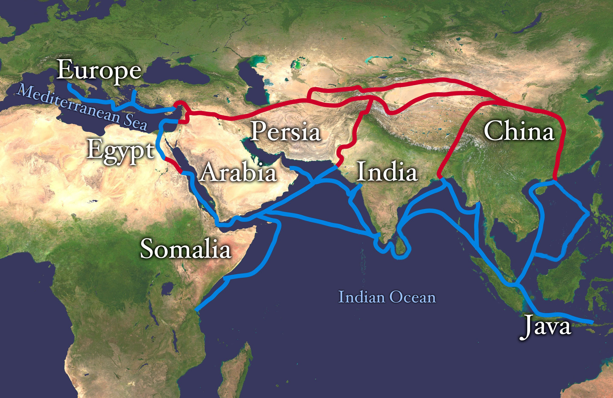
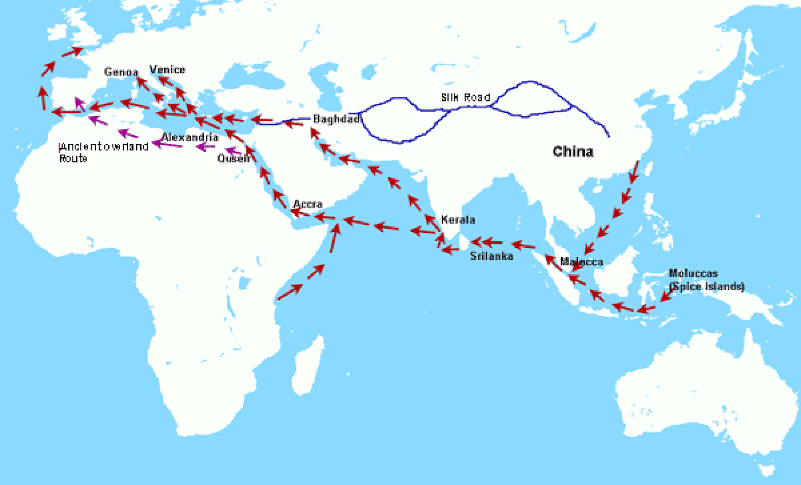
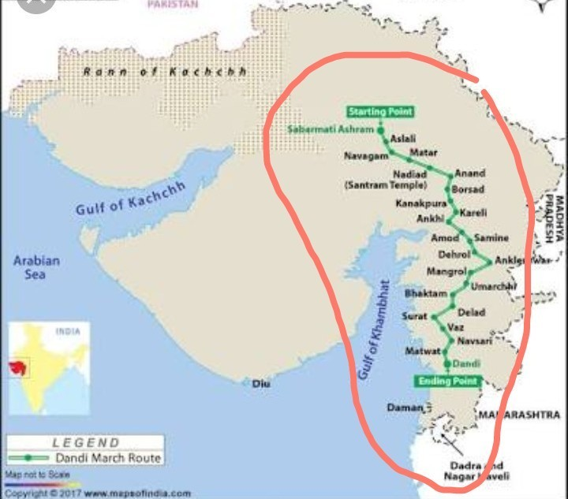
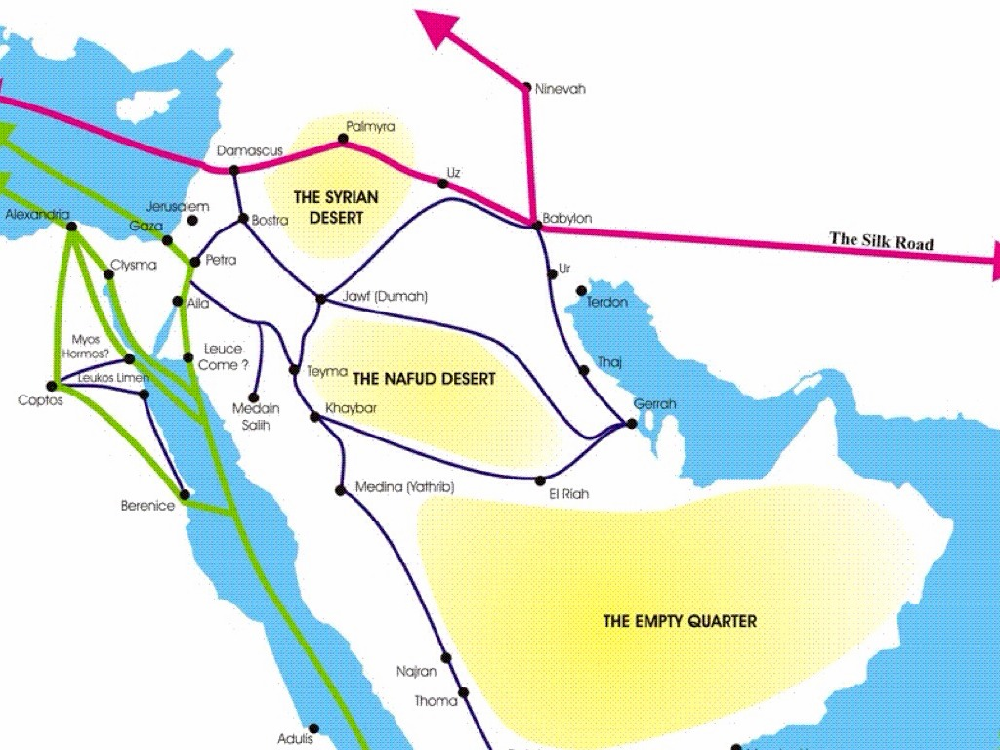
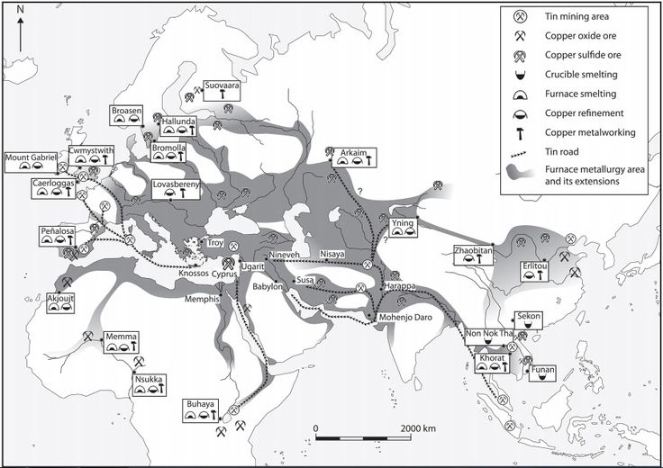

SST Project
Topic-
Research and explain why people travelled to India from various parts of the world in ancient times.
Here are reasons why people travelled to India:
- Trade and Commerce-
India was known for its wealth and recources, including spices,textiles, and precious stones.Traders from region s like Greece, Rome, Persia, and
China travelled to engage in commerce and estabilsh trade routes.
- Religous Pilgrimages-
India was a significant center for Buddhism, Hindusm, and later, Islam.Pilmgrims from China, Southeast Asia, and the middle east travelled to
India to visit sacred sites, study religious texts, and seek spirtual enlightment.
- Education and Knowledge-
Ancient India was home to renowed centers of learning, such as Nalanda and Takshashila. Scholarsand students from varous parts of the world
came to study subjects like mathematics, astronomy, medicine, and philosophy.
- Cultural Exchange-
Travellers were also motivated by the desire to experience and document the rich cultural heritage of India. They were fascinated by India's
diverse traditions, languages, and customs, which they recorded in their travelogues.
These motivations highlight India's historical significance as a hub of economic, spiritual, and intellectual activity.
These are 5 routes used to reach India:
- Silk route-
The silk route was not a single road but a network of land and sea paths that connected China and so Far East with countries in Europe and in
Middle East.

- Spice route-
The spices routes, also known as Maritime Silk roads, is the name given to the network of sea routes that link the East with the West.

- Salt route-
The Via Salaria (Salt Route) over which roman salt from ostia was carried into other parts of Italy.

- Incense Route-
The incense trade route was ans ancient network of major land and sea trading routes linking the mediterranean world with the eastern and
southern sources of incense, spices and other luxury gods, streching from Mediiterranean ports across the Levant and Egypt through Northern
East Africa and Arabia to India and beyond.

- Tin route-
Tin route flourished in the 1st millienum BCE. It streched from the tin mines in Cornwall in the Far Southwest of Britain, over
the sea of France, and then down to Greece and beyond.

Geographical features of these routes:
- Geographical features of Silk Route-
- Mountain Passes: The Hindu Kush and Karakoram ranges, with passes like Khyber Pass and Bolan Pass, provided access to India.
- Deserts: The Taklamakan and Gobi Deserts were challenging but navigable through oasis towns.
- Rivers and Plateaus: The Indus River Valley and Punjab region facilitated trade and movement into India.
- Geographical features of Spice Route-
- Oceanic Routes: The Indian Ocean was central, connecting Southeast Asia, India, the Arabian Peninsula, and Africa through maritime trade.
- Peninsulas and Coastal Areas: The Indian subcontinent's western and eastern coasts (e.g., Kerala and Gujarat) were vital hubs for the spice
trade, with ports like Calicut and Cochin playing major roles.
- Southeast Asian Islands: Islands like Sumatra and Java in Indonesia were key locations for the production and distribution of spices,
connecting global trade networks between the East and West.
- Geographical features of Salt Route
- Himalayas and Mountain Passes: Salt was traded from Tibet and Nepal into India via high-altitude passes like Shipki La.
- Sahara Desert and Trans-Saharan Routes: Salt was transported across the Sahara Desert through oases like Timbuktu to sub-Saharan Africa.
- Geographical features of Incense Route-
- Arabian Peninsula: The Incense Route passed through the deserts of the Arabian Peninsula, where frankincense and myrrh were traded from regions like Oman and Yemen.
- Red Sea and Mediterranean: The route extended through ports along the Red Sea, connecting to the Mediterranean through Egypt, facilitating trade with Europe and the Roman Empire.
- Asian and African Deserts: The route also crossed the deserts of the Levant and parts of North Africa, linking the Arabian Peninsula to the Mediterranean and Asia, facilitating the exchange of incense, spices, and other luxury goods.
- Geographical features of Tin Route-
- Southwest Britain: The Tin Route began in the tin-rich regions of Cornwall and Devon in Britain, where tin was mined and traded.
- Channel and Mediterranean: Tin was transported across the English Channel and through France, then shipped through the Mediterranean, reaching ancient civilizations like the Phoenicians and Romans.
- Trade with the Near East: The route connected to the ancient trade networks, with tin being traded to the Near East, enabling the production of bronze in places like Mesopotamia and Egypt.
Thank you
CLICK here to go to Home screen